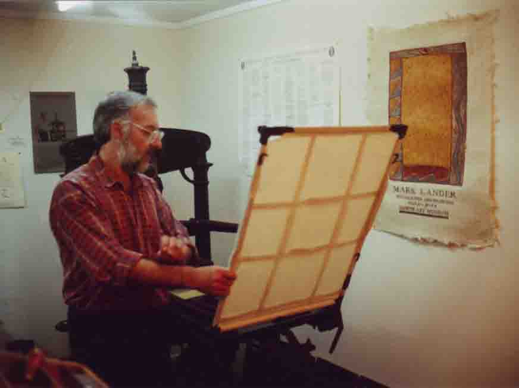
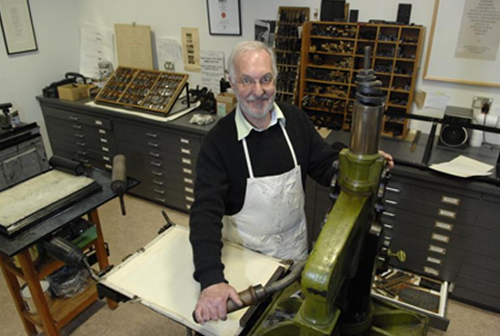

Alan Loney at the University of Otago, 2008
Alan Loney was born in 1940 in Lower Hutt
in New Zealand. His first book of poems The bare re-membrance was
published in 1971 and he printed his first book in 1974. Since then he
has gained an inter-national reputation as a poet, critic, writer,
publisher and printer.
He has been a book and magazine
editor (including Parallax and New Zealand Crafts) and a publisher at
Hawk Press (1975-1983), Black Light Press (1987-1991) and The Holloway
Press at the University of Auckland (1994-1998). He has also been
published by fine presses such as Granary Books (New York), The Janus
Press (Vermont), Ink-A! Press (Oregon) and Barbarian Press (British
Columbia) as well as Five Islands Press and Auckland University Press.
He
was Auckland University Literary Fellow 1992, Honorary Fellow at The
Australian Centre, University of Melbourne 2002-2006 and Printer in
Residence at University of Otago 2008. Alan Loney lives in Melbourne,
Australia with his partner, musician and painter Miriam Morris. He is
the recipient of the 2011 Janet Frame Award.
Recent books include
Fragmenta nova
(poetry, Five Islands Press, Melbourne),
The Falling
(a memoir of his childhood, Auckland University Press), and
Searchings, the Journals of Max
Gimblett
(The Holloway Press, Auckland). Black Pepper published his most recent memoir,
The printing of a masterpiece, in 2008.
For Alan Loney's BlogSee:
electioeditions.blogspot.com/
Back to top
Janet Frame Award Press Release
Janet Frame Prize for Kiwi Expat Author
Sally Blundell
6 May 2011
Poet, printer and editor Alan
Loney has been named as the 2011 recipient of a Janet Frame Literary
Trust Award worth $10,000. Alan Loney is a New Zealander who has lived
in Melbourne, Australia in recent years, although retaining strong
literary ties on both sides of the Tasman. Born in 1940, Loney’s first
book of poetry was published in 1971. He won a NZ Book Award for his
1976 collection dear Mondrian. US poet Robert Creeley said of the
collection Sidetracks: Notebooks 1976-1991, that “Alan Loney’s work has
always been at the cutting edge of world literature. His mastery has
become a resource for us all.”
Alongside an influential career
as printer, editor and publisher, Loney has an extensive bibliography
of his own poetry and prose published in many countries. He has four
titles forthcoming in 2011: Anne of the Iron Door (a novella from Black
Pepper Press, Melbourne) as well as three new poetry volumes with
Rubicon Press (Canada), Ninja Press (California) and Chax Press
(Arizona). The Falling: A Memoir was released by Auckland University
Press in 2001.
Chair of the Janet Frame Literary Trust Pamela
Gordon said, ‘These awards are made possible by Janet Frame’s generous
bequest of an endowment fund, and they’re offered in her spirit of
wanting to give encouragement and financial support to established
writers of proven merit, who may be overdue for some recognition or
reward.”
Alan Loney declared himself “astonished, delighted,
honoured and somewhat moved” to receive the prize, and he also said
“how nourishing the news about the Award is, and how confirming it
seems for such a life’s work that I have had.”
Back to top
Article
True to Type
Sally Blundell
The Listener (New Zealand), 2 August 2008
Denis Glover said he had
‘the real feel for print.’ Robert Creeley believed him
worthy of ‘a small monument.’ Now, legendary New Zealand
poet and printer Alan Loney has told his life story. But it’s a
characteristically evasive version.
Self-definition, writes Alan Loney, is a ‘creaky business.’
It is, he says, a question that remains a question ‘in spite of
the plethora of answers, examples, anecdotes and epic narratives we
often lend to our short lives.’
Speaking from his home in the suburbs of south-east Melbourne, where he
has lived for the past five years, the poet, printer, essayist, book
designer, typographer, one-time stutterer and unconvinced
autobiographer has little faith in the successful translation of memory
into narrative.
‘If you were to put down on paper all the words you saw in a day
– in newspapers, in signs seen from the car or the bus –
you would end up with a record of your readerly experience, but it
would not be a narrative. Our own experience is like that. That is why
autobiography is a lie. And biography is even worse.’
Loney’s new memoir,
The Printing of a Masterpiece, is more an account of his work as a printer and maker of books than a straightforward autobiography.
He has tried previously to put his life story in some semblance of
order. In 1994, his slim collection of prose and poetry entitled
The Erasure Tapes
was described by the writer as ‘an autobiography in which I
refuse to tell the story of my life.’ As one of these poems
explains:
We cannot rearrange
our past. We rearrange our past
all the time. We have fashioned
a garden where the flowers
have always now come out
Then, in 2001, came
The Falling: A Memoir
– a remarkable tribute to a childhood acquaintance killed in the
Tangiwai train disaster of 1953. Here the book-long plunge of
Locomotive Ka 949 into the Whangaehu River, the gruelling twist and
tumble of the carriage in free fall, serves as an oblique exploration
of his childhood.
‘My name is Robert Hale,’ the book begins, ‘or, if
you’d prefer, my name is Alan Loney. Or, my name could be any
that any of us could choose. If all of us die, and if kings and paupers
are the same in death, as the wisdom goes, then what’s in a
name?’
Pure Loney – self-exploratory, philosophical, circumspect.
The author then gives a responding voice to the young Hale: ‘Why
this interest in me? What a trip to ‘lay on a kid’ one
could say, and on a dead one at that...’
Pure Loney again – self-reflective in a manner that is fragmented, erudite, novel.
Yet it is through the deaths of Hale and his mother, Eileen, that we
see shreds of a painful childhood. Loney was born in Lower Hutt in
1940, the eldest of eight children, coping as well as a child can cope
with the unremitting violence of his father and the enduring shame of
being ‘that poor stutterer.’ He played the drum for the
Boys’ Brigade, he didn’t enjoy books (he came to reading,
he says, after he came to -writing), he didn’t like Elvis Presley.
The same year that 151 passengers were killed as the first six
carriages of the Main Trunk express train dropped into the river below,
Loney led his mother, bruised and despairing, away from the edge of the
flooded Hutt River. As he says now: ‘I knew that if my mother
jumped into the river I would follow her. I was 13, in my first year at
high school, and experiencing fully a sort of bewilderment at being
alive, and having no clue at what might be in store for me and
‘waiting for the next blow’ as Beckett put it
somewhere.’
There were times, he writes in
The Falling,
that he wanted to sail down the Hutt River and go on out to sea.
‘I had a raft of wooden planks over a couple of 44 gal oil
drums.’
The river was too fast, too dangerous for a boy on his own, but Loney
did not stay in his hometown for long. He left school at 14 –
beginning what he calls his long and ragged path into adulthood.
‘I found it hard to make my way in the world –
relationships, jobs, living in places. Some of my friends have very
smooth paths – good family, good schools, good education and on
to good jobs. I didn’t start printing until 1974-75, and the path
to that was a rather jagged affair. But it was all grist to the mill,
lots of different experiences to draw on and that’s very
fruitful.’
He considered a monastery, took instead an office job. He was a jazz
musician; he played in Wellington’s dance halls in a Maori rock
and blues band. ‘[Then] the jazz scene I was involved in folded
in 1963 and people went back to university or to journalism careers or
just stopped playing. There was nowhere for me to play.’
It was during this time, working as a proofreader on the
Dominion,
that Loney began writing poetry, inspired initially by English poets
(Robert Graves, Edwin Muir, Alun Lewis), then later largely by the work
of new American poets such as Robert Creeley, Gary Snyder and Charles
Olson. Loney’s discovery of Olson’s
The Maximus Poems, he later wrote, ‘extended by a long margin my sense of the ‘poetically possible’.’
Seven years later, in Dunedin, he approached Dunedin’s fledgling
Caveman Press. A deal was made by which Loney set the poems in type
while editor and publisher Trevor Reeves printed them on a treadle
platen press. The result –
The Bare Remembrance (1974), the first of 10 books of poetry by Loney.
The following year, with money saved, borrowed and gifted, he bought a
60-year-old treadle platen press for $100 and established Hawk Press, a
one-man printing and publishing operation based initially in a draughty
garage in Christchurch’s Taylor’s Mistake. Its aim? To
publish those poets ignored by the mainstream literary publications
– poets such as Ian Wedde, Joanna Paul, Bill Manhire and
Elizabeth Smither – in typographic form ‘appropriate to its
content.’
Loney explains. ‘The poets of the 30s – Curnow, Glover,
critics like E.H. -McCormack – did a full-frontal attack on those
poets writing about the bonnie banks of Otago, that whole pastoral
tradition. At that point, New Zealand poetry was largely informed by an
English set of traditions – Pound, Eliot, Auden, Spender. Then in
the late 60s, a new generation discovered European and American poetry.
Their poetry was more urbanised – they didn’t want to know
about brooding hills. It looked different. Sounded different. It was
shaped differently. It broke away from the production values of Caxton
Press and
Landfall. It was
poetry as ephemeral as human life and you didn’t have to carve
the letters in stone. A new energy entered New Zealand poetry and it
was ferociously resisted by the mainstream of the time. It still
is.’
These odd-shaped, open-form poems (Loney takes task with this term
– all content has form, he argues, words in a straight line have
form) were having a hard time being printed in mainstream magazines.
Although some appeared in print – on sheets of A4 stapled
together or in experimental journals such as Alan Brunton’s
Freed
– small presses such as Hawk Press provided a new outlet in what
has since been described as a poetic and typographical challenge to the
literary publishers of the time.
Not content to ‘muck about in the shed with an old printing
press,’ Loney chose the harder road, spending long hours at
considerable cost, and at ‘some risk to one’s emotional
stability,’ hand-inking the type and pulling the handle of the
press in what he calls his ‘dance around the press.’ The
end result is a fine-press limited-edition publication designed and
printed to maintain utter fidelity to the text as it came from the
author.
‘The poem arrives in an intended shape. My job is to preserve as
close as humanly possible that shape and those margins. It’s not
hard. All you have to do is follow what’s in front of your eyes.
If poems have long lines, for example, you don’t do a narrow book
with turnover lines that would destroy the integrity of the poems, that
disfigure the poems.’
And if a publisher changes that shape? ‘That’s called
rewriting. It’s as simple as that – any messing around is
editorial stupidity and ignorance.’
This is Loney’s commitment to accuracy, to being faithful to
within a hair’s breadth to the spacing on the page, to make
decisions as to the arrangement of the letters, the type, the margins,
the page size, the line length, the format of the book itself in order
to provide the necessary visual clues required by the poem.
There is also an archival role – an attempt to preserve that
moment of creativity from which a poem is made. In printing a
previously unpublished poem by Robin Hyde, Loney and poet-scholar
Michele Leggott produced a book revealing the author’s many
versions of the poem.
‘We had to find a way of signalling these things with complete
accuracy, so we had this massive variational thing with the 14 lines
that were in common to all versions in blue.’
Such fidelity to the pedigree of the poem is best described by Charles
Olson in a quote included in the preface to Loney’s second poetry
collection,
dear Mondrian:
whatever you have to say, leave
the roots on, let them
dangle
And the dirt
just to make clear
where they came from
Assisting this process was the increasing availability of letterpress
equipment as the publishing industry turned to more high-tech printing
processes. Within a few years of venturing into publishing, Loney had
moved from treadle to hand presses, from machine-made to handmade
paper, drawing on methods and materials used from the time of
Gutenberg’s first cast type in 1440 until the advent of the
linotype machine in 1884.
Despite the small print runs, the limited market, the onerous work,
Hawk Press succeeded in printing 25 volumes of poetry, two essays and
three books of illustrated texts in a mere eight years. In 1976,
dear Mondrian
won the New Zealand Book Award as well as the admiration of Robert
Creeley, who described the work as complex and significant, revealing a
mastery of the book for which ‘at least a small monument in some
unused public square would seem an entirely just reward.’
As Denis Glover once wrote about Loney, he has ‘the real feel for print.’
Loney’s commitment to literature went beyond writing and
publishing. In Dunedin, he opened the Poetry Shop. In the early 80s, he
edited
Parallax, a journal of postmodern literature and art. He edited
New Zealand Crafts magazine; he founded the Book Arts Society; in 1991, he founded the arts journal
A Brief Description of the Whole World.
After Hawk Press folded in 1983, Loney set up Black Light Press in
Wellington, then the Holloway Press with Peter Simpson at the
University of Auckland, and now Electio Editions in Melbourne.
He has worked with a wide number of artists – Ralph Hotere,
Marilyn Webb, Andrew Drummond, Julia Morison, Robin Neate, Max
Gimblett. The collaborative Loney-Gimblett
Mondrian’s flowers,
published by New York’s Granary Books, is a beautiful
annihilation of the boundaries between poem, art and the
Mondrian-inspired fact of the book itself.
Loney has now printed 50 books. Some have been written by others (most recently, Dante Alighieri’s
The Flowery Meadow,
with drawings by Bruno Leti); some are his own work – essays,
poems, questions, paradoxes, further oblique stabs at self-definition.
And he is still published by others – his latest collection of poems,
Nowhere to go (Five Islands), was published last year in Australia. But he has one stipulation.
‘Sometimes I think my sensibility is so weird no one else has it,
but I do tend to send material to publishers I trust and respect. The
only thing I want is an asymmetrical design from cover to cover. How
you do it, I say, is up to you.’
Back to top
 Biography
Biography